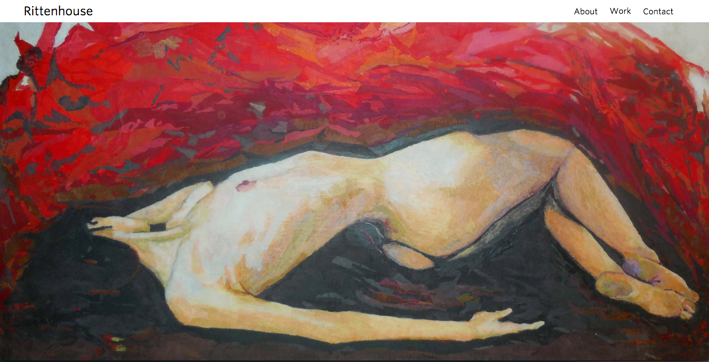
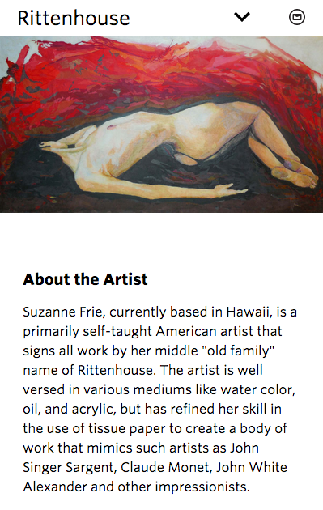
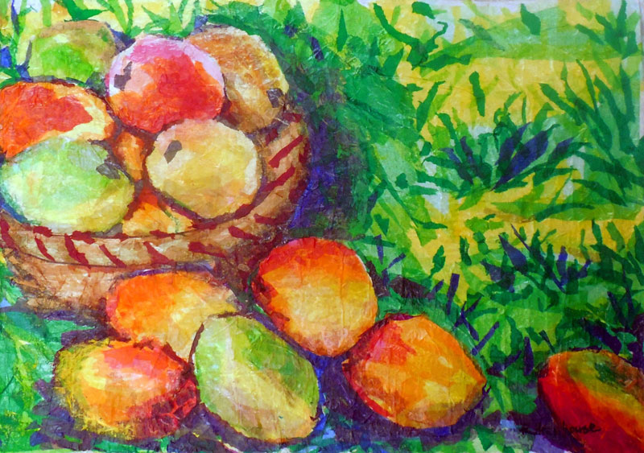
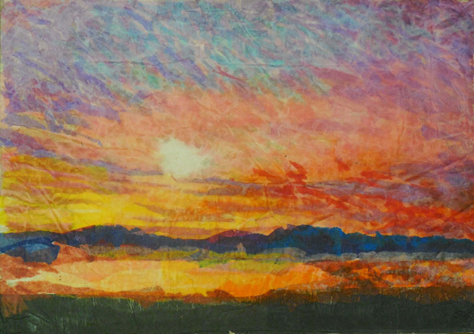
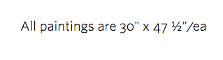
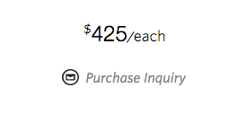

Suzanne Frie is the amazingly talented artist behind Rittenhouse, which is her “old family” name and signature on all her art. We met when I was working at Kimpton Hotels in San Diego, and I invited her to join a community art show I organized at the hotel featuring local artist. Recently Suzanne moved to Hawaii, and is working to break into the art scene there and further promote her work. I’m thrilled to have partnered with her on a website project that advances her beautiful art, and such a great learning opportunity for me in showcasing visual content.
developed and deployed using: HTML, CSS, Javascript/Jquery, Brackets text editor, Sketch, Photoshop, Amazon S3, Amazon Route 53, and Git Hub.
Discover and Define
I began this project by learning more about the art world including: the top online art merchants, other artist’s websites, and exploring museums. This was an educational experience as much as it was a competitive analysis; looking for inspiration that showcased art well1 and finding things that I did not like2.
1things i liked
- type that is clean and clear, yet not too noticeable which takes away from the art.
- Black and white palette
- Art side by side, for comparing and contrasting
- Learning about the artists craft, personal life and inspiration
Suzanne had very clear needs for the site: 1) A site for the art to stand out and nothing else. 2) didn't want the writing to be in first person, 3) nor did she want a picture of herself. The pieces and prices that she wanted were well defined, as she had four collections and a handful of other pieces that she wanted to be on there.
Design and Develop
I began by identifying all the aspect ratios3 I was working with before getting into sketches or even thinking about layout ideas, while many of the physical pieces were the same width, the photography was not. I got all the images in Sketch and grouped them by aspect ratio sizes, to find the ones that were similar, the same, and different. This process offered an ideal foundation in influencing the type of design options available. I had been thinking about some design ideas that didn't work at all with the given collateral, so this was a valuable lesson that taught me the importance of ensuring that you understand your collateral at hand, before thinking about design.
3identifying the collateral details

Next, I started sketching ideas, conceptualizing a design with an opening page that switched images upon opening, and 4 separate pages to feature the various art collections and an about/contact page and an image gallery that had thumbnails to navigate. Though as my brainstorming progressed I was concerned about 1) all the clicking to get through the galleries, 2) the thumbnail image gallery, because the thumbnails were distracting from the enlarged piece and 3) concerned about bouncing user out of the site too soon with five pages. Another sketch idea I worked through was a one page layout and an image gallery. I didn’t like this idea as 1) the images on the landing page would be implemented through CSS and therefore crop them; in addtion, 2) lots of back and forth clicking. From my earlier research, I had developed a clear understanding of what I wanted and didn’t want, and overall these designs were lining up with the latter - I scrapped all of them.
I stepped away from the computer, and visited some museums for further inspiration. I’ve always admired the Hirshorn Museum in Washington DC and it had a great impact on my design inspiration in this project. Designed by Gordan Bunshaft, it’s a circular shaped building, that displays art throughout the circular layout without dividing or separate exhibit rooms. It’s quite surprising when you stroll through the whole exhibit to find yourself back at the start, as the circular walkthrough is a bit of an allusion and feels more like a short walk down a straight hallway. I related this experience to this project and wanted to have the site offer a similar type of experience: a stroll scroll through the site without any distracting stops or turns, allowing the user to stop and take a closer look as they please.
With a refreshed perspective I dove into sketching my new ideas, which evolved into a single page layout that featured all four exhibits, with the handful of unrelated pieces set as section breaks. Given the challenge of different aspect ratios of the collateral and now a single page layout I had a few concerns with the design: 1) Finding the ideal responsive layout for each section, and 2) slow loading time for all the images, as featured on a single page. As a solution, I decided to design and develop the art collection layouts with a fixed maximum width layout for the desktop version: 1) to a fixed width4 and optimize each individual image to the max-width size for quick loading, and 2) to ensure that each collection was laid out as intended across different desktop sizes 3) synchronized written content and gallery content.
4desktop section width layouts

For the opening page, I had initially used an auto scrolling image background; though I ultimately removed it, because: 1) it didn’t line up with the rest of the site’s museum feeling theme and 2) since the images were displayed through CSS as a background on the desktop version, different viewports would crop and compromise the multiple paintings displayed. The opening image that we settled on, featuring the “Study in Red”5, was chosen for three key reasons: 1) it’s aspect ratio is ideal to display on desktop screens without getting compromised different viewports, 2) was most indicative of her work in general, and it’s a 3) intriguing opening - allowing the art to speak for itself. Regarding the navigation, I had initially used the same navigation, with the drop down menu, for the desktop as I had for the mobile version6. The idea was to not have any text take away from the art, but I later felt that while it was a space saving measure for the mobile version, the desktop version can easily afford the written links and save the user a click. The original navigation also said “”Rittenhouse | Art”7 - my thinking was to have that as the landing page tagline - but that compromised her brand of Rittenhouse. Suzanne signs her art “Rittenhouse”, not Rittenhouse | Art. Another reminder to myself - Let the art speak to the user, not the web design.
5desktop landing page
6mobile version landing page
I included a clean and simple image fancybox image gallery8, and indicated the entry to a user with a hover effect on the images with a magnifying glass9. Using the hover effect was an alternative solution in saving space , instead of cluttering up the art with additional arrows or gallery links around it. This gallery was in line with my objective of a strolling through a museum feel, whereas the experience offers a stop to take a closer look free of clutter, and once the gallery is open it's a simple click out to exit. I utilized HTML5’s “data-big” attribute to switch the image to a larger sized image in the gallery, which minimized loading time on the landing page. However, once I settled on this gallery and the hover entry, it brought up some concerns. The about section at this point of the design process included a clickable image10 below the description that a user could click through, viewing different paintings. I initially included it in the design as it was a surprise and delight interactive click through to see a sampling of the artist’s works; unfortunately, due to how the image gallery design evolved I ultimately removed it 1) to avoid user confusion since it is so similar to the gallery hover effect and 2) it didn’t align with the sites theme of the stroll through an exhibit, and 3) again, with the unnecessary click.
8, 9clickable gallery and hover effect
10removed gallery and hover effect
The painting descriptions11 designed for the section breaks also needed to be used for the Parasol Collection - Because 1) Suzanne wanted those labeled with titles and short description, and 2) they had different physical sizes. The labeling was designed for both sections for consistency and efficient use of space. The other collections had the same physical painting sizes (photography was not the same size) and prices so that allowed them to be labeled only by their title - Which was a solution to serve the first goal - to let the art stand out and speak for itself. I added the sizing12 to bottom of the sections description and pricing13 at the bottom, including the pages “purchase inquiry” as a call to action.
11review page

12painting sizing
13call to action inquiry
Deploy and Conclude
This project was a lifelong lesson in importance of relating experiences in real life to designing flatland. Flatland is a limited place, but amazing design and inspiration is all around us, and this experience reminded me to get away from the computer and get to know the world you're designing for.
lessons learned
- Stay true to the objective's set
- Keep pushing the design until it’s right
- If you think a feature might be confusing to a user, it probably is
Client Review
"Customer Service and Aesthetics: Kyle seamlessly blends these skills together to create a wonderful website product, especially since this endeavor was conducted via phone and email conversations. His expert design knowledge coupled with his tireless research regarding the fine arts exceeded my expectations regarding the outcome of the website to create a beautiful end product."
-Suzanne Frie